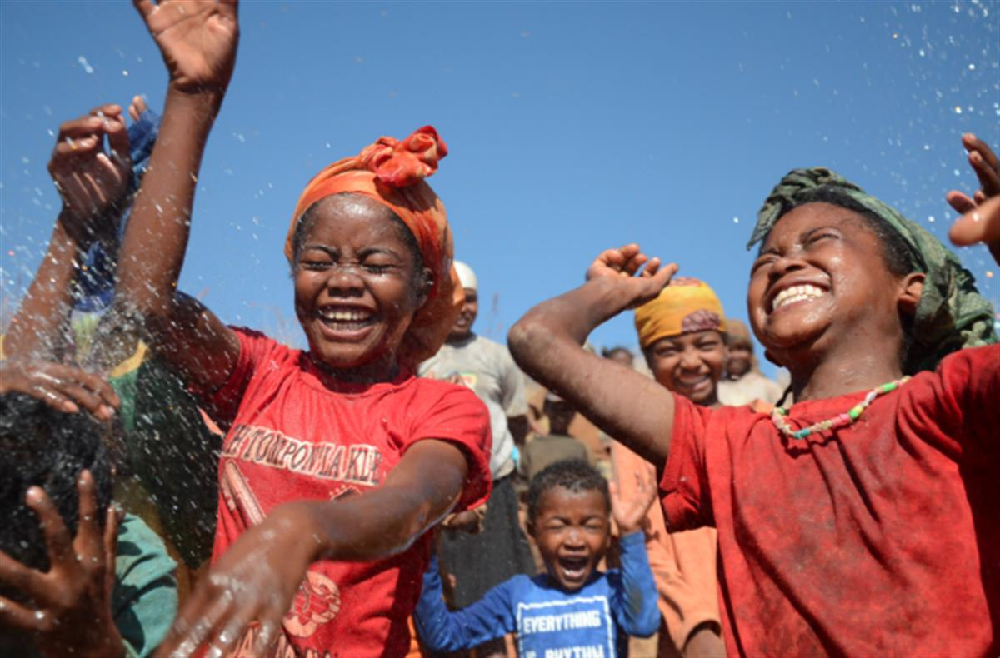

WaterAid/Ernest Randriarimalala
WaterAid/Ernest Randriarimalala
To be a girl is... to be in school
You may remember meeting Solo and Ze during our 2014 To Be A Girl campaign. As young girls growing up in rural Madagascar, they carried not only water, but the future of their families on their backs.
But now, thanks to your support, life looks very different for these two best friends.
A girl's dream
When you first met 12-year-old Ze, she had dropped out of school to care for her family of nine. From the age of seven it was normal for Ze to make the long trek for water up to five times a day. And that was between the farming and cooking she’d do to keep her parents and siblings from going hungry.
But when clean water arrived in her village for the first time, Ze's entire life changed.

WaterAid/Ernest RandriarimalalaThe chance to learn again
Just months later, Ze is back in school.
Before, it was impossible for her to study. But time once spent walking miles to collect water and doing household chores is now spent in the classroom learning new skills, playing with friends, and dreaming up plans for the future. Her life is changing for good.
For Ze's parents, their children represent their hopes and dreams. Noel and Iari both want their children to be educated and to have the best possible start in life.
'In the future, I want to take care of my parents and pay them back for what they have done,' says Ze.
'I now have fewer chores to do and more time to study. I'm so happy I'm back in school and have the opportunity to learn more.'
Relive the moment everything changed:
SOURCE: WATER AID